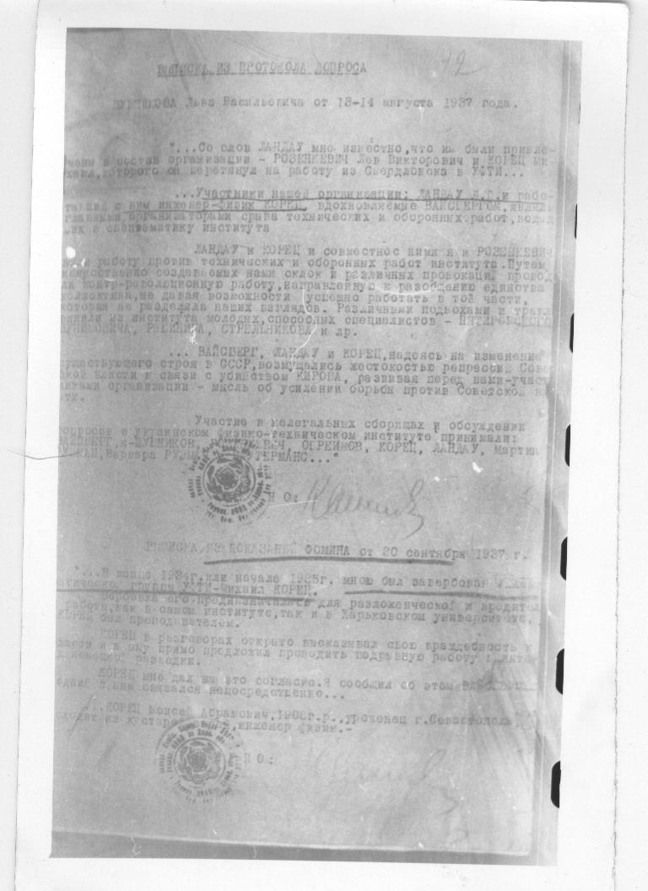
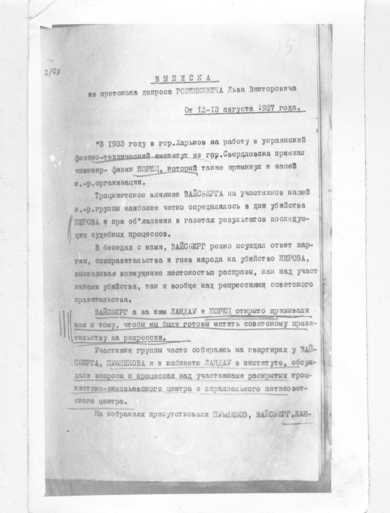
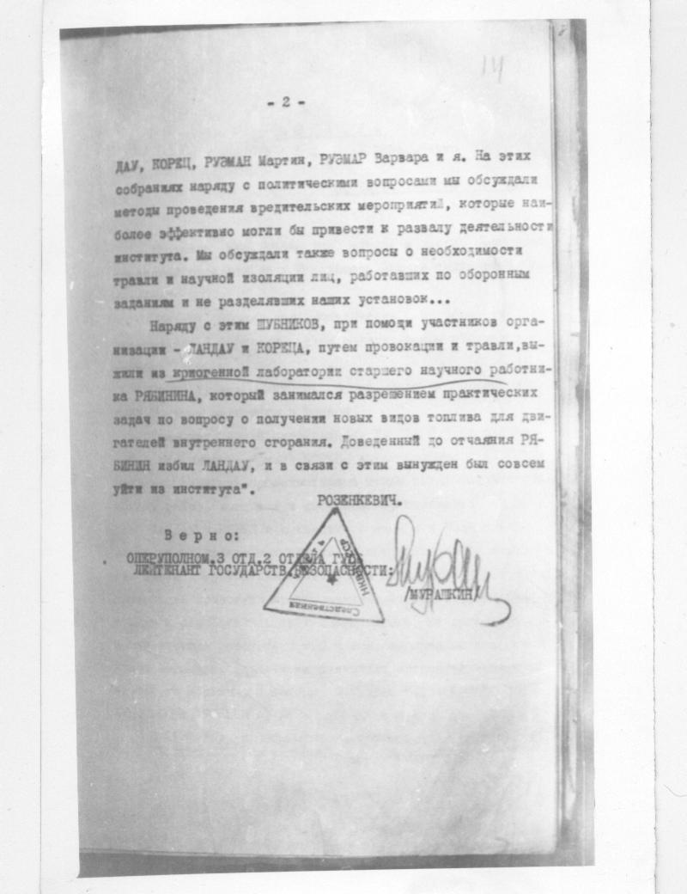
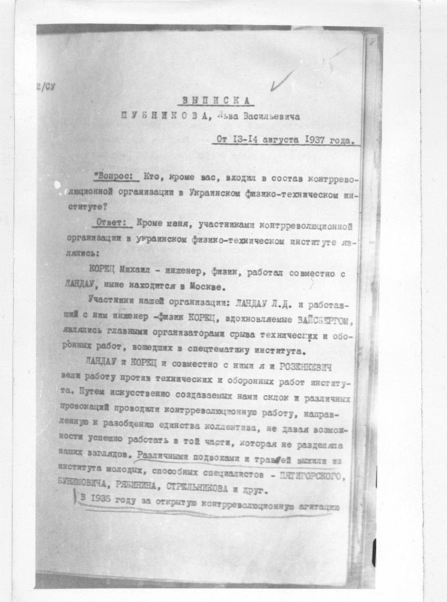
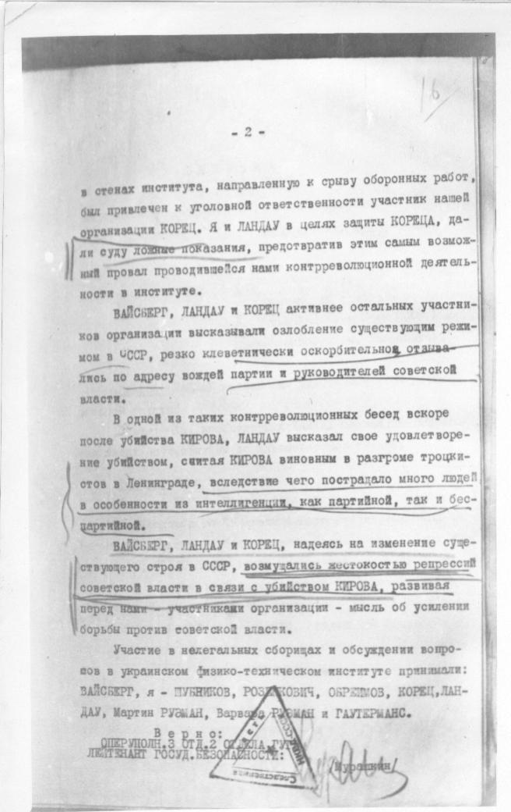
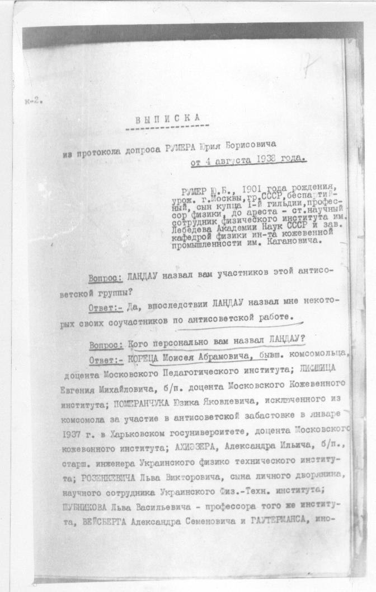
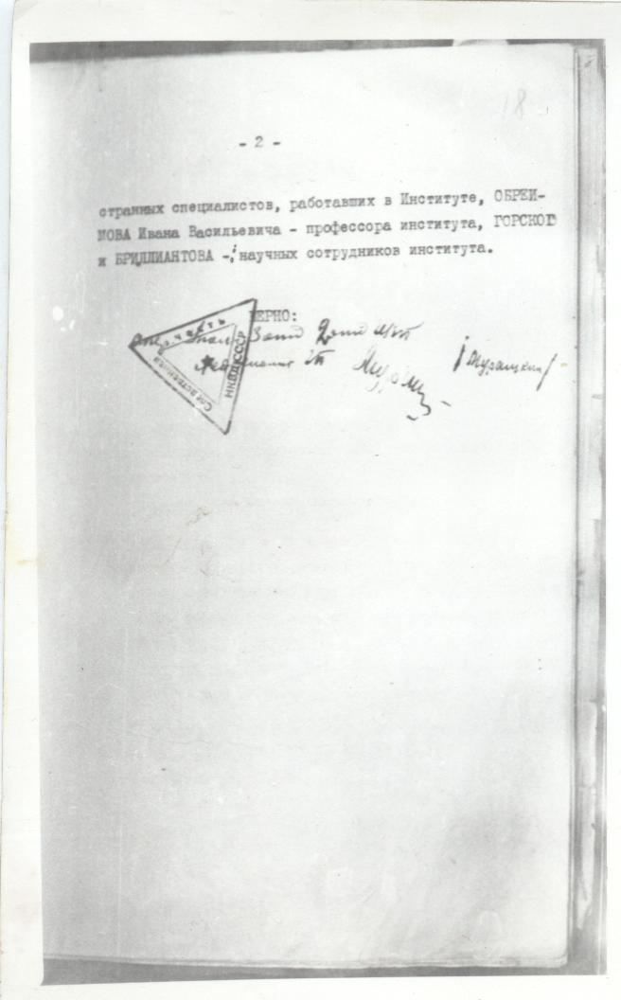

стр. 12 Выписка из допроса Шубникова (13.08.37) и показаний Фомина (20.09.37)

Чтение снимка, местами неуверенное. Сверьте со снимком.
12
ВЫПИСКА ИЗ ПРОТОКОЛА ДОПРОСА
ШУБНИКОВА Льва Васильевича от 13-14 августа 1937 года.
"...Со слов ЛАНДАУ мне известно, что им были привле-
чены в состав организации - РОЗЕНКЕВИЧ Лев Викторович и КОРЕЦ Ми-
хаил, которого он перетянул на работу из Свердловска в УФТИ..."
"...Участники нашей организации: ЛАНДАУ Л.Д. и рабо-
тавший с ним инженер-физик КОРЕЦ, вдохновляемые ВАЙСБЕРГОМ, явля-
лись главными организаторами срыва технических и оборонных работ, вошед-
ших в спецтематику института
ЛАНДАУ и КОРЕЦ и совместно с ними я и РОЗЕНКЕВИЧ
вели работу против технических и оборонных работ института. Путем
искусственно создаваемых нами склок и различных провокаций проводи-
ли контр-революционную работу, направленную к разобщению единства
коллектива, не давая возможности успешно работать в той части,
которая не разделяла наших взглядов. Различными подвохами и травлей
выжили из института молодых, способных специалистов - ПЯТИГОРСКОГО,
БУНИМОВИЧА, РЯБИНИНА, СТРЕЛЬНИКОВА и др.
"...ВАЙСБЕРГ, ЛАНДАУ и КОРЕЦ, надеясь на изменение
существующего строя в СССР, возмущались жестокостью репрессий Совет-
ской власти в связи с убийством КИРОВА, развивая перед нами-участ-
никами организации - мысль об усилении борьбы против Советской вла-
сти.
Участие в нелегальных сборищах и обсуждении
вопросов в Украинском физико-техническом институте принимали:
ВАЙСБЕРГ, я-ШУБНИКОВ, РОЗЕНКЕВИЧ, ОБРЕИМОВ, КОРЕЦ, ЛАНДАУ, Мартин
РУЭМАН, Варвара РУЭМАН, ГАУТЕРМАНС..."
[печать]
[нрзб]
[подпись]
ВЫПИСКА ИЗ ПОКАЗАНИЙ ФОМИНА от 20 сентября 1937 г.
"...В конце 1934г. или начале 1935г. мною был завербован [нрзб]
харьковской группы УФТИ - Михаил КОРЕЦ.
Вербовка его предназначалась для разложенческой и вредитель-
ской работы, как в самом институте, так и в Харьковском университете,
где КОРЕЦ был преподавателем.
КОРЕЦ в разговорах открыто высказывал свою враждебность к
[нрзб] и [нрзб] прямо предложил проводить подрывную работу [нрзб]
КОРЕЦ мне дал на это согласие. Я сообщил об этом [нрзб]
[нрзб] связался непосредственно...
"...КОРЕЦ Моисей Абрамович, 1908г.р., уроженец г.Севастополя,
[нрзб], инженер физик."
[печать]
[нрзб]
стр. 13 Выписка из допороса Розенкевича 12.08.37 стр. 14

[на полях] 2/СУ
13
ВЫПИСКА
из протокола допроса РОЗЕНКЕВИЧА Льва Викторовича
От 12-13 августа 1937 года.
"В 1933 году в гор.Харьков на работу в украинский
физико-технический институт из гор.Свердловска приехал
инженер- физик КОРЕЦ, который также примкнул к нашей
к.-р.организации.
Троцкистское влияние ВАЙСБЕРГА на участников нашей
к.-р.группы наиболее четко определилось в дни убийства
КИРОВА и при об"явлении в газетах результатов последую-
щих судебных процессов.
В беседах с нами, ВАЙСБЕРГ резко осуждал ответ пар-
тии, совправительства и гнев народа на убийство КИРОВА,
высказывая возмущение жестокостью расправы, как над участ-
никами убийства, так и вообще над репрессиями советского
правительства.
ВАЙСБЕРГ а за ним ЛАНДАУ и КОРЕЦ открыто призывали
нас к тому, чтобы мы были готовы мстить советскому прави-
тельству за репрессии.
Участники группы часто собирались на квартирах у ВАЙ-
СБЕРГА, ШУБНИКОВА и в кабинете ЛАНДАУ в институте, обсуж-
дали вопросы о процессах над участниками раскрытых троц-
кистско-зиновьевского центра и параллельного антисовет-
ского центра.
На собраниях присутствовали ШУБНИКОВ, ВАЙСБЕРГ, ЛАН-

- 2 -
14
ДАУ, КОРЕЦ, РУЭМАН Мартин, РУЭМАН Варвара и я. На этих
собраниях наряду с политическими вопросами мы обсуждали
методы проведения вредительских мероприятий, которые наи-
более эффективно могли бы привести к развалу деятельности
института. Мы обсуждали также вопросы о необходимости
травли и научной изоляции лиц, работавших по оборонным
заданиям и не разделявших наших установок...
Наряду с этим ШУБНИКОВ, при помощи участников орга-
низации - ЛАНДАУ и КОРЕЦА, путем провокации и травли, вы-
жили из криогенной лаборатории старшего научного работник-
ка РЯБИНИНА, который занимался разрешением практических
задач по вопросу о получении новых видов топлива для дви-
гателей внутреннего сгорания. Доведенный до отчаяния РЯ-
БИНИН избил ЛАНДАУ, и в связи с этим вынужден был совсем
уйти из института".
РОЗЕНКЕВИЧ.
Верно:
ОПЕРУПОЛНОМ. 3 ОТД. 2 ОТДЕЛА ГУГБ
ЛЕЙТЕНАНТ ГОСУДАРСТВ. БЕЗОПАСНОСТИ:
[печать]
[подпись] /МУРАШКИН/
стр. 15 Выписка из показаний Шубникова 13.08.37 стр.16

[на полях] 2/СУ
[на полях] V
15
ВЫПИСКА
ШУБНИКОВА, Льва Васильевича
От 13-14 августа 1937 года.
"Вопрос: Кто, кроме вас, входил в состав контррево-
люционной организации в Украинском физико-техническом ин-
ституте?
Ответ: Кроме меня, участниками контрреволюционной
организации в украинском физико-техническом институте яв-
лялись:
КОРЕЦ Михаил - инженер, физик, работал совместно с
ЛАНДАУ, ныне находится в Москве.
Участники нашей организации: ЛАНДАУ Л.Д. и работав-
ший с ним инженер-физик КОРЕЦ, вдохновляемые ВАЙСБЕРГОМ,
являлись главными организаторами срыва технических и обо-
ронных работ, вошедших в спецтематику института.
ЛАНДАУ и КОРЕЦ и совместно с ними я и РОЗЕНКЕВИЧ
вели работу против технических и оборонных работ институ-
та. Путем искусственно создаваемых нами склок и различных
провокаций проводили контрреволюционную работу, направ-
ленную к разобщению единства коллектива, не давая возмож-
ности успешно работать в той части, которая не разделяла
наших взглядов. Различными подвохами и травлей выжили из
института молодых, способных специалистов - ПЯТИГОРСКОГО,
БУНИМОВИЧА, РЯБИНИНА, СТРЕЛЬНИКОВА и друг.
В 1935 году за открытую контрреволюционную агитацию

- 2 -
16
в стенах института, направленную к срыву оборонных работ,
был привлечен к уголовной ответственности участник нашей
организации КОРЕЦ. Я и ЛАНДАУ в целях защиты КОРЕЦА, да-
ли суду ложные показания, предотвратив этим самым возмож-
ный провал проводившейся нами контрреволюционной деятель-
ности в институте.
ВАЙСБЕРГ, ЛАНДАУ и КОРЕЦ активнее остальных участни-
ков организации высказывали озлобление существующим режи-
мом в СССР, резко клеветнически оскорбительно отзыва-
лись по адресу вождей партии и руководителей советской
власти.
В одной из таких контрреволюционных бесед вскоре
после убийства КИРОВА, ЛАНДАУ высказал свое удовлетворе-
ние убийством, считая КИРОВА виновным в разгроме троцки-
стов в Ленинграде, вследствие чего пострадало много людей
в особенности из интеллигенции, как партийной, так и бес-
партийной.
ВАЙСБЕРГ, ЛАНДАУ и КОРЕЦ, надеясь на изменение суще-
ствующего строя в СССР, возмущались жестокостью репрессий
советской власти в связи с убийством КИРОВА, развивая
перед нами - участниками организации - мысль об усилении
борьбы против советской власти.
Участие в нелегальных сборищах и обсуждении вопро-
сов в украинском физико-техническом институте принимали:
ВАЙСБЕРГ, я - ШУБНИКОВ, РОЗЕНКЕВИЧ, ОБРЕИМОВ, КОРЕЦ, ЛАН-
ДАУ, Мартин РУЭМАН, Варвара РУЭМАН и ГАУТЕРМАНС.
Верно:
ОПЕРУПОЛН. 3 ОТД. 2 ОТДЕЛА ГУГБ
ЛЕЙТЕНАНТ ГОСУД. БЕЗОПАСНОСТИ:
[печать]
[подпись] /Мурашкин/
стр.17 Выписка из допроса Румера 04.08.38 стр. 18

[на полях] к-2.
17
ВЫПИСКА
----------------
из протокола допроса РУМЕРА Юрия Борисовича
от 4 августа 1938 года.
РУМЕР Ю.Б., 1901 года рождения,
урож. г.Москвы, гр.СССР, беспартий-
ный, сын купца 1-й гильдии, профес-
сор физики, до ареста - ст.научный
сотрудник Физического института им.
Лебедева Академии Наук СССР и зав.
кафедрой физики ин-та кожевенной
промышленности им. Кагановича.
Вопрос: ЛАНДАУ назвал вам участников этой антисо-
ветской группы?
Ответ:- Да, впоследствии ЛАНДАУ назвал мне некото-
рых своих соучастников по антисоветской работе.
Вопрос: Кого персонально вам назвал ЛАНДАУ?
Ответ:- КОРЕЦА Моисея Абрамовича, бывш. комсомольца,
доцента Московского Педагогического института; ЛИСИЦА
Евгения Михайловича, б/п. доцента Московского Кожевенного
института; ПОМЕРАНЧУКА Юзика Яковлевича, исключенного из
комсомола за участие в антисоветской забастовке в январе
1937 г. в Харьковском госуниверситете, доцента Московского
кожевенного института; АХИЕЗЕРА, Александра Ильича, б/п.,
старш. инженера Украинского физико технического институ-
та; РОЗЕНКЕВИЧА Льва Викторовича, сына личного дворянина,
научного сотрудника Украинского Физ.-Техн. института;
ШУБНИКОВА Льва Васильевича - профессора того же институ-
та, ВЕЙСБЕРГА Александра Семеновича и ГАУТЕРМАНСА, ино-

- 2 -
18
странных специалистов, работавших в Институте, ОБРЕИ-
МОВА Ивана Васильевича - профессора института, ГОРСКОГО
и БРИЛЛИАНТОВА - научных сотрудников института.
Верно:
[печать]
[нрзб]
[подпись] /Мурашкин/